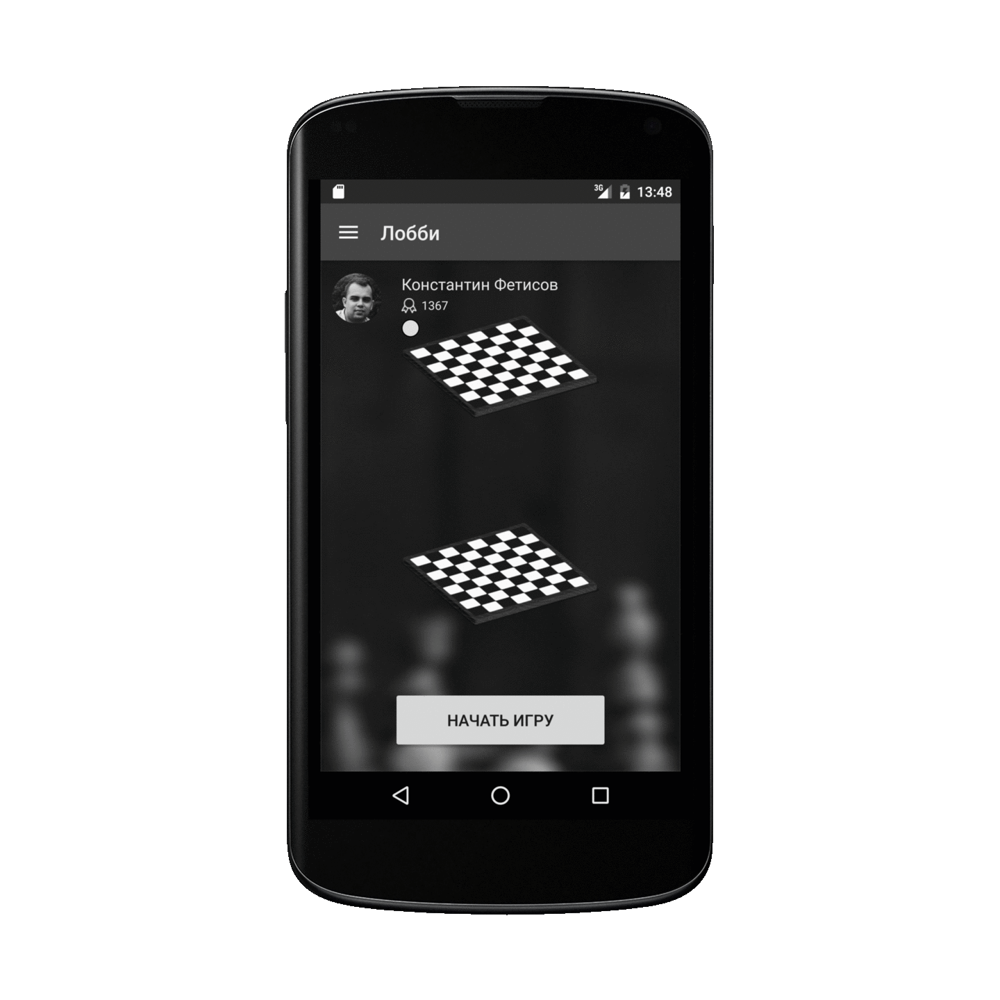
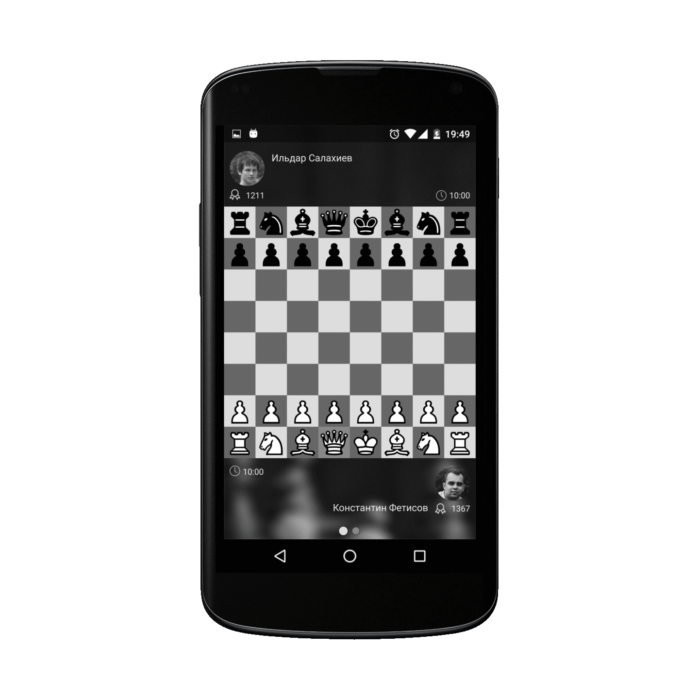
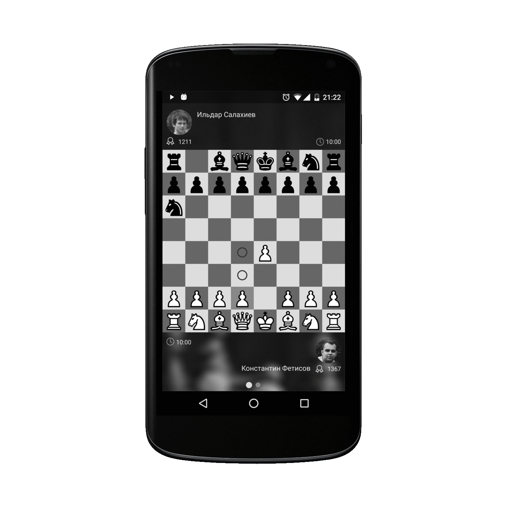
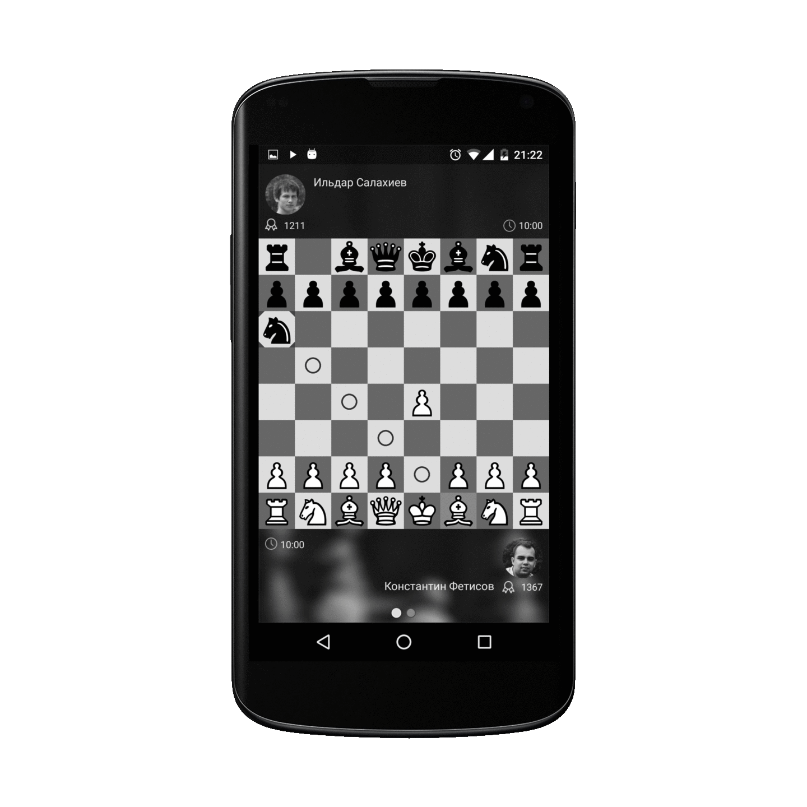
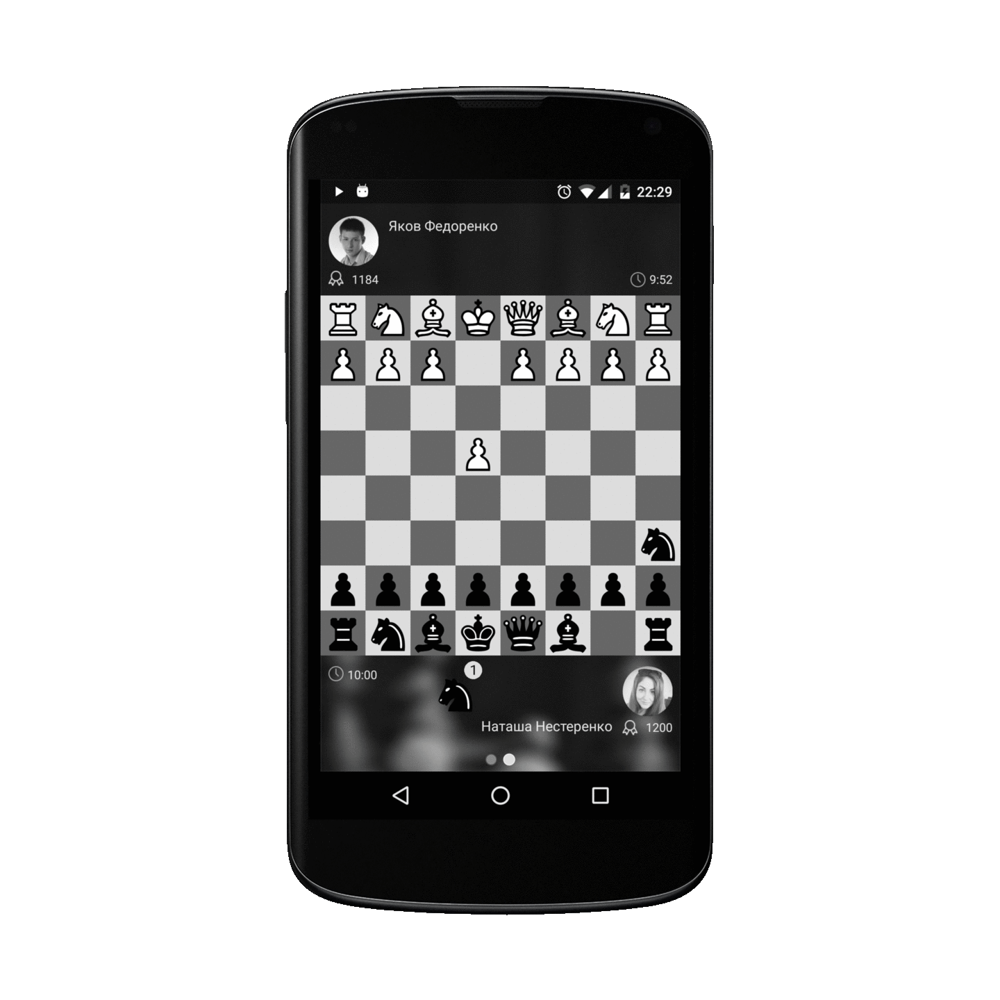

Шведские шахматы
TeamChess
Первое мобильное Приложение для игры в шведские шахматы online
Командные
Играйте с друзьями в одной команде и побеждайте вместе!
Быстрые
Режим сумасшедшего блица
Эмоциональные
Напряжение на протяжении всей партии

Как это работает?
1) 1 партия, 2 доски, 4 игрока, 2 команды;
2) В каждой команде один участник играет белыми, другой - чёрными фигурами;
3) Игра идёт с контролем времени;
4) Партнёры имеют возможность видеть позиции и время на обеих досках.
Главный принцип
1) Сбитую фигуру соперника игрок передает своему партнеру в резерв;
2) Фигура из резерва может быть выставлена на доску вместо обычного хода.
Условие победы
Проигывает команда, игроку которой поставили мат, либо игрок, который первым просрочил время.
Используемые правила
1) Выставленной фигурой можно объявлять и шах, и мат;
2) Пешку можно выставлять на любую горизонталь, кроме первой и последней;
3) При превращении пешка объявляется желаемой фигурой.
Условие мата
Если король находится под шахом и его невозможно ни увести,
ни прикрыть фигурой с доски, однако при этом он в принципе может быть прикрыт
выставлением фигуры из резерва (даже если в данный момент у игрока такой фигуры нет),
такая позиция считается не матом, а шахом. В этом случае проигрыш не фиксируется.
Игрок может зависнуть до получения нужной фигуры, выигрыша одной из сторон
на другой доске или истечения времени. Матом признаётся только позиция,
где король не может быть прикрыт от шаха никаким допустимым правилами способом
(то есть когда шах дан конём, либо дающая шах фигура стоит вплотную к королю,
либо шах дан одновременно двумя фигурами, от которых невозможно закрыть короля одним ходом).
Отличие от обычных шахмат
1) Пешка, выставленная на поле второй горизонтали, имеет те же возможности хода,
что и пешка, изначально стоящая на своей исходной позиции: она может первым ходом пойти на два поля;
при таком ходе она может быть взята на проходе ответным ходом противника;
2) Ладья, выставленная на крайнее поле первой горизонтали, может участвовать в рокировке,
как никогда не ходившая.
1. Начало игры online

2. Наблюдай за соседней доской

3. Возможные ходы подсвечиваются

4. Сбитая фигура передается в резерв напарнику

5. Фигура из резерва может быть выставлена на доску

Установить приложение


Вы всегда можете связаться с нами
swedish.chess@gmail.com
Группа ВКонтакте